5 A Theoretical Model of the Near–Surface Shear Layer of the Sun
5.1 Introduction
One of the intriguing features in the differential rotation map of the Sun, as seen, for example, in Figure 1 of Rachel Howe (2009) or in Figure 26 of Basu (2016), is the existence of the near-surface shear layer (NSSL). This is a layer near the solar surface at the top of the convection zone, within which the angular velocity decreases sharply with increasing solar radius. The first indication of the existence of such a layer came more than half a century ago, when it was noted that the rotation rate of the solar surface measured from the Doppler shifts of photospheric spectral lines was about 5% lower than the rotation rate inferred from the positions of sunspots on the solar surface (Howard and Harvey 1970). While the depth at which sunspots are anchored remains unclear and probably changes with the age of a sunspot group (Longcope and Choudhuri 2002), the rotation rate inferred from the sunspots was assumed to correspond to a layer underneath the solar surface, implying that the angular velocity was higher in that layer. When helioseismology mapped the internal differential rotation of the Sun, the existence of this layer was fully established. 1.1 shows the differential rotation map of the Sun obtained by helioseismology (with contours of constant angular velocity) which we shall use later in our calculations in Section 1.4. The contours of constant angular velocity, which are nearly radial within a large part of the body of the solar convection zone, bend towards the equator within a layer of thickness of order \(\approx 0.05\)at the top of the convection zone (Schou et al. 1998; R. Howe et al. 2005).
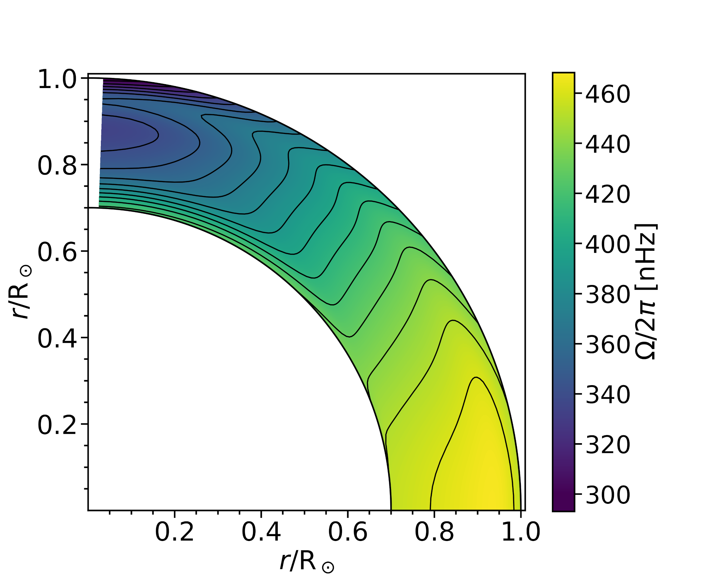
What causes this NSSL is still not properly understood. The first attempts to explain it (Foukal and Jokipii 1975; Gilman and Foukal 1979) were based on the idea that convection in the upper layers of the convection zone mixes angular momentum in such a manner that the angular momentum per unit mass tends to become constant in these layers, leading to a decrease of the angular velocity with radius. Once the differential rotation of the Sun was properly mapped and no evidence was found for the constancy of the specific angular momentum within the convection zone, it was realized that this could not be the appropriate explanation. Within the last few years, there have been attempts to explain the NSSL on the basis of numerical simulations of the solar convection (Guerrero et al. 2013; Hotta, Rempel, and Yokoyama 2015; Matilsky, Hindman, and Toomre 2019). It has been argued by Hotta, Rempel, and Yokoyama (2015) that the Reynolds stresses play an important role in creating the NSSL, whereas Matilsky, Hindman, and Toomre (2019) suggested that the steep decrease in density in the top layers of the convection zone is crucial in giving rise to the NSSL. Arnab Rai Choudhuri (2021a) has recently proposed a possible alternative theoretical explanation of the NSSL based on order-of-magnitude estimates. The aim of the present paper is to substantiate the ideas proposed by Arnab Rai Choudhuri (2021a) through detailed calculations.
The theories of the two large-scale flow patterns within the convection zone of the Sun—the differential rotation and the meridional circulation—are intimately connected with each other (Leonid L. Kitchatinov 2013; Arnab Rai Choudhuri 2021b). The idea we wish to develop follows from the central equation in the theory of the meridional circulation: the thermal wind balance equation. Since the nature of the Coriolis force arising out of the solar rotation varies with latitude, the effect of this force on the convection is expected to vary with latitude (Durney and Roxburgh 1971; Belvedere and Paterno 1976). Since the Coriolis force provides the least hindrance to convective heat transport in the polar regions, the poles of the Sun are expected to be slightly hotter than the equator (L. L. Kitchatinov and Ruediger 1995). There are some observational indications that this may indeed be the case (Kuhn, Libbrecht, and Dicke 1988; Rast, Ortiz, and Meisner 2008). Hotter poles would tend to drive what is called a thermal wind, i.e. a meridional circulation which would be equatorward at the solar surface. Since the observed meridional circulation is the opposite of that, we must have another effect which overpowers this and drives the meridional circulation in the poleward direction at the surface as observed. It is easy to show that the centrifugal force arising out of the observed differential rotation of the Sun can do this job: see Figure 8 and the accompanying text in Arnab Rai Choudhuri (2021b). The term corresponding to the dissipation of the meridional circulation is found to be negligible compared to the driving terms within the bulk of the convention zone, as pointed out in the Appendix of Arnab Rai Choudhuri (2021b). As a result, we expect the two driving terms of the meridional circulation—the thermal wind term and the centrifugal term—to be comparable within the main body of the solar convection zone. This is often referred to as the thermal wind balance condition.
It is generally believed that the thermal wind balance condition holds within the body of the convection zone (Leonid L. Kitchatinov 2013; Karak, Kitchatinov, and Choudhuri 2014), although different authors may not completely agree as to the extent to which it holds (Brun, Antia, and Chitre 2010). There is, however, not much agreement among different authors whether the thermal wind condition should hold even within the top upper layer of the solar convection zone. A widely held view is that this upper layer is a kind of boundary layer within which the dissipation term or Reynolds stresses become important, giving rise to a violation of the thermal wind balance condition. It is argued that the NSSL arises in some manner out of this violation. A completely opposite argument is given in the earlier paper by Arnab Rai Choudhuri (2021a) and in the present paper. We point out that the thermal wind term becomes very large in the top layer of the solar convection zone due to a combination of two factors: (i) the temperature falls sharply as we move outward through this layer, and (ii) the pole-equator temperature difference does not vary with depth in this layer because of the reduced effect of the Coriolis force on convection in this layer, as explained in the next section (Section 1.2). The dissipation term is much smaller than the thermal wind term even within the main body of the convection zone, as the order of magnitude estimate in the Appendix of Arnab Rai Choudhuri (2021a) suggests. If the thermal wind term becomes even much larger in the upper layers of the convection zone, then it appears unlikely to us that this large thermal wind term can be balanced by the dissipation term. The only possibility is that the centrifugal term also has to become very large in the top layer to balance the thermal wind term. This dictates that the top layer has to be a region within which the angular velocity undergoes a large variation. We show through quantitative calculations that the structure of the NSSL calculated theoretically on the basis of our ideas agrees with the observational data remarkably well.
We explain our basic methodology in the next section (Section 1.2). After that Section 1.3 is devoted to the applying our methodology to an analytical expression of the differential rotation in the interior of the solar convection zone. Then the actual data of differential rotation obtained by helioseismology are applied to calculate the structure of the NSSL in Section 1.4. Finally, our conclusions are summarized in Section 1.5.
5.2 Basic Methodology
The equation for thermal wind balance is \[\begin{equation} r \sin{\theta} \frac{\pa}{\pa z} \Omega^2=\frac{1}{r}\frac{g}{\gamma C_V} \frac{\pa S}{\pa \theta}, \label{ch5:eq1} \end{equation}\] where \(\Omega\) is the angular velocity, \(z\) is the distance from the equatorial plane measured upward, \(g\) is the acceleration due to gravity of the Sun at the point under consideration and \(\gamma\) is the adiabatic index, while \(S\) and \(C_V\) are respectively the entropy and the specific heat of the gas per unit mass. See Arnab Rai Choudhuri (2021b) for the derivation and a discussion of this equation.
Over any isochoric surface, the entropy and temperature differentials between two points are related by \[\begin{equation} \Delta S = C_V \frac{\Delta T}{T}, \label{ch5:eq2} \end{equation}\] We also point out in Appendix [ch5:appn] that Equation [ch5:eq1] and Equation [ch5:eq2] give the following equation for the temperature differences on isochoric surfaces \[\begin{equation} r^2 \sin \theta \frac{\pa}{\pa z} \Omega^2 = \frac{g}{\gamma T} \left( \frac{\pa}{\pa \theta} \Delta T \right)_{\rm isochore}. \label{ch5:eq3} \end{equation}\] This is the main equation on which the analysis of the present paper is based. Since the oblateness of isochoric surfaces in the Sun is so small, they can be regarded as spherical surfaces for most practical purposes. However, from a conceptual point of view, it is important to remember that our central equation (Equation [ch5:eq3]) refers to temperature variations over isochoric surfaces and that is what gives the possibility of comparing our theoretical results with observational data of the solar surface.
In our discussions, we sometimes will have to deal with situations like the following. We may know the distribution of \(\Omega (r, \theta)\) in some region. Suppose we also know the temperature on some axis \(\theta = \theta_0\), which means that we would know the value of the temperature at one point on a spherical surface. From this, we want to find the temperature at other points. According to Equation [ch5:eq3], the temperature difference between the points \((r, \theta)\) and \((r,\theta_0)\) is given by \[\begin{equation} \Delta T_{\theta_0} (r, \theta) = \frac{r^2 \gamma}{g} \int_{\theta_0}^{\theta} d\theta \; T \sin \theta \frac{\pa}{\pa z} \Omega^2. \label{ch5:eq34} \end{equation}\] As stressed earlier by Arnab Rai Choudhuri (2021a, 2021b), whether the Coriolis force due to the Sun’s rotation has any effect on the convection cells depends on whether the convective turnover time is comparable to the rotation period or not. Numerical simulations suggest that convection in the deeper layers of the convection zone involves large convection cells with long turnover times and are affected by the Coriolis force: see Figure 1 in Brown et al. (2010) or Figure 3 in Gastine et al. (2014). As a result, heat transfer depends on latitude. However, this is not the case near the top of the convection zone, where the convection cells (the granules) are much smaller in size and have turnover times as short as a few minutes. The extent to which the temperature gradient \(d T/ dr\) differs from the adiabatic gradient depends on the mixing length (see, for exmaple, Kippenhahn and Weigert (1990), Section 7). In the top of the convection zone which is not affected by rotation, the mixing length is independent of latitute and we expect \(d T/ dr\) also to be independent of latitude (Arnab Rai Choudhuri 2021a). Although there must be a gradual transition from deeper layers within which heat transport depends on the latitude to the top layer within which this is not the case, we assume for simplicity that the transition takes place at radius \(r = r_c\) above which we have \(d T/d r\) independent of latitude. We shall work out our model by assuming different values of \(r_c\) in the range 0.92 – 0.98 .
In the simplest kind of a spherically symmetric model of the Sun, the temperature \(T\) would be function of \(r\) alone and would be independent of \(\theta\). If the heat transport depends on latitude, then that would introduce a small variation of \(T\) with \(\theta\). We can write \[\begin{equation} T(r, \theta) = T (r, 0) + \Delta T (r, \theta). \label{ch5:eq4} \end{equation}\] If \(d T/ dr\) is independent of latitude in the layer above \(r > r_c\), then we have \[\begin{equation} \frac{dT (r,\theta)}{dr} = \frac{dT (r,0)}{dr} \nonumber \end{equation}\] so that it follows from Equation [ch5:eq4] that \[\begin{equation} \frac{d}{dr} \Delta T (r, \theta)= 0 \nonumber \end{equation}\] in this top layer. So we can write \[\begin{equation} \Delta T (r > r_c, \theta) = \Delta T (r_c, \theta). \label{ch5:eq5} \end{equation}\] In principle, it would be possible to determine \(T (r, \theta)\) throughout the convection zone if we have a theory of how convective heat transport varies with latitude due to the effect of the Coriolis force. Since our understanding of this complex problem is limited, we can proceed in a different manner. Since there is general agreement that the thermal wind balance condition holds within the deeper layers of the convection zone, we assume Equation [ch5:eq3] to hold below the radius \(r = r_c\). If we know the angular velocity \(\Omega (r, \theta)\) in this region, then it is straightforward to evaluate the left hand side of Equation [ch5:eq3]. Once we have the value of the left hand side, we can carry on integration in accordance with Equation [ch5:eq34] to determine \(\Delta T (r, \theta)\) at all points within the convection zone below \(r = r_c\). Once we have the value of \(\Delta T (r, \theta)\) at the radius \(r = r_c\), we readily have the value of \(\Delta T (r, \theta)\) at all points above this surface by using Equation [ch5:eq5]. In other words, we can obtain \(\Delta T (r, \theta)\) throughout the convection zone from the values of \(\Omega (r, \theta)\) in the deeper layers below \(r = r_c\), where Equation [ch5:eq3] is expected to hold. Comparing Equation [ch5:eq34] with Equation [ch5:eq5], it should be clear that \(\Delta T (r, \theta)\) is nothing but \(\Delta T_{\theta_0} (r, \theta)\) with \(\theta_0 = 0\).
As we already pointed out, there is a lack of consensus whether the thermal wind balance equation holds in the top layer of the convection zone. It follows from Equation [ch5:eq5] that \((\pa/\pa \theta) \Delta T (r,\theta)\) does not vary with \(r\) above the radial surface \(r = r_c\). On the other hand, the temperature scale height becomes very small in this top layer and the temperature falls by orders of magnitude as we move to the solar surface from \(r = r_c\). As a result, the thermal wind term represented by the right hand side of Equation [ch5:eq3] in which \(T\) appears in the denominator becomes very large. We do not think that this term can be balanced by the dissipation term. We suggest that the thermal wind balance must hold even in this top layer and the centrifugal term represented by left hand side of Equation [ch5:eq3] has to become very large to balance the thermal wind term, implying a strong variation of \(\Omega^2\) along \(z\). As we have the values of \(\Delta T\) above \(r = r_c\), we can evaluate the right hand side of Equation [ch5:eq3] easily. Then we can use Equation [ch5:eq3] to determine how \(\Omega^2\) varies within this top layer.
In a nutshell, our methodology is as follows. We start by assuming a value of \(r = r_c\) below which convective heat transport is affected by the Coriolis force and above which this is not the case. To begin with, we need the value of \(\Omega (r, \theta)\) below \(r_c\), from which we can calculate the left hand side of Equation [ch5:eq3] and eventually obtain \(\Delta T (r, \theta)\) throughout the solar convection zone, obtaining \(\Delta T (r, \theta)\) above \(r_c\) by using Equation [ch5:eq5]. Once we have \(\Delta T (r, \theta)\) above \(r_c\), the right hand side of Equation [ch5:eq3] can be evaluated, which enables us to find out \(\Omega (r, \theta)\) above \(r_c\) from Equation [ch5:eq3]. Although we use Equation [ch5:eq3] for all our calculations, we proceed differently below and above \(r = r_c\). Below \(r_c\) we calculate \(\Delta T (r, \theta)\) from \(\Omega (r, \theta)\) beginning with the left hand side of Equation [ch5:eq3], whereas above \(r_c\) we calculate \(\Omega (r, \theta)\) from \(\Delta T (r, \theta)\) beginning with the right hand side of Equation [ch5:eq3].
The earlier paper by Arnab Rai Choudhuri (2021a) presented some order-of-magnitude estimates based on the methodology outlined above. Now we present a detailed analysis. It order to carry on this analysis, we need the values of the temperature as a function of \(r\), which we can take to be \(T(r, 0)\), i.e. temperature values on the polar axis where the effect of the Coriolis force is minimal. Several models of the convection zone exist in the literature (Spruit 1974; Bahcall and Ulrich 1988; Christensen-Dalsgaard et al. 1996; Bahcall and Pinsonneault 2004). We use what has been referred to as Model S by Christensen-Dalsgaard et al. (1996) to obtain \(T\) at different values of \(r\). Actually, all the models of the convection zone give very similar \(T(r)\), as can be seen in 1.2. We also note the sharp fall of the temperature in the outer layers of the convection zone, which is of crucial importance in our theory. The thermal wind term appearing in Equation [ch5:eq3] has \(T\) in the denominator and becomes very large in the uppermost layers of the convection zone. The value of the adiabatic index \(\gamma\) is taken to be 5/3 in all our calculations. We point out that, in Model S, the value of \(\gamma\) is very close to 5/3 throughout the convection zone except in the top layer 0.97–, where it becomes somewhat less due to the variations in the level of hydrogen ionization. We also need the values of \(\Omega (r, \theta)\) below \(r = r_c\) to start our calculations. Calculations based on an analytical expression of \(\Omega (r, \theta)\) which fits helioseismology observtions reasonably well are presented in Section 1.3. Then Section 1.4 will present calculations done with the actual helioseismology data of differential rotation \(\Omega (r, \theta)\) used below \(r_c\). Calculations of both Section 1.3 and Section 1.4 give the NSSL matching the observational data quite closely for appropriate values of \(r_c\). We point out that the input data of \(\Omega (r, \theta)\) used in both these sections (given by [ch5:eq6] and from helioseismology respectively) give nearly radial contours till \(r_c\) without much sign of the NSSL below \(r_c\). In fact, the analytical expression of \(\Omega (r, \theta)\) that we use does not incorporate the NSSL at all and gives radial contours till the solar surface. As we get the NSSL even in this case, we can clearly rule out the possibility that there might have been some indication about the existence of the NSSL in the input data which percolated through the calculations to give the NSSL at the end. There is no doubt that the NSSL arises primarily out of the requirement that the centrifugal term has to match the thermal wind term which has become very large in the top layers of the solar convection zone.
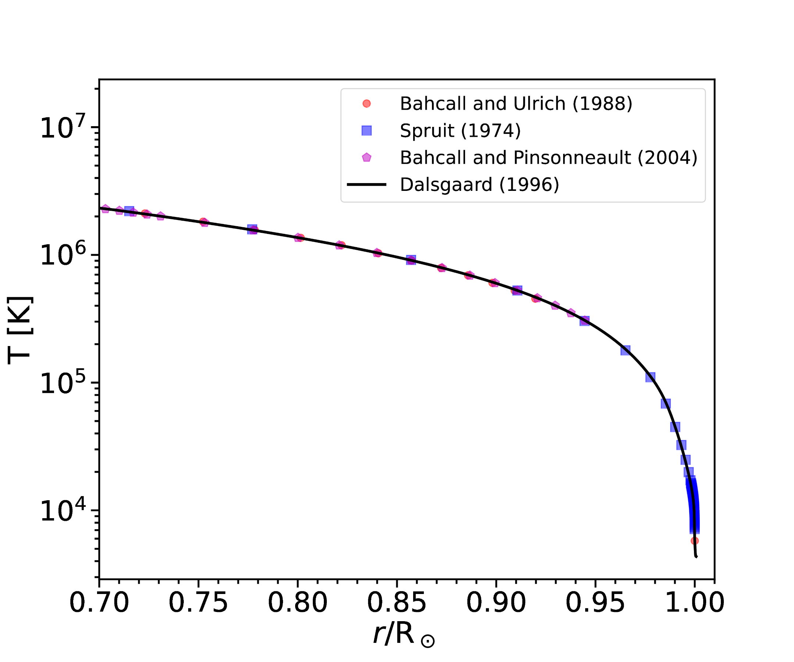
It may be mentioned that Matilsky, Hindman, and Toomre (2020) calculated the temperature difference \(\Delta T\) which one would get from the solar differential rotation by assuming the thermal wind balance Equation [ch5:eq3] to be valid till the top of the convection zone and plotted it in Figure 13 of their paper. However, they did not discuss any physical significance of this. Some related issues are also discussed in a recent paper by Vasil, Julien, and Featherstone (2020).
5.3 Results Based on Analytical Expression
As pointed out in Section 1.2, we need the values of \(\Omega (r,\theta)\) below \(r<r_c\) to start our calculations. In this section, we present the results of our calculations based on the following analytical expression of \(\Omega (r,\theta)\) which fits the helioseismology observations closely (Schou et al. 1998; Charbonneau et al. 1999): \[\begin{equation} \Omega(r,\theta)= \Omega_{\rm RZ}+ \frac{1}{2}\left[1-{\rm erf}\left(\frac{r-r_t}{d_t}\right)\right] \left[\Omega_{\rm SCZ}(\theta)-\Omega_{\rm RZ}\right], \label{ch5:eq6} \end{equation}\] where \(r_t=0.7\), \(d_t=0.025\), \(\Omega_{\rm RZ}/2\pi=432.8\) nHz and \(\Omega_{\rm SCZ}(\theta)/2\pi=\Omega_{\rm EQ}+\alpha_2\cos^2(\theta)+\alpha_4\cos^4(\theta)\), with \(\Omega_{\rm EQ}/2\pi= 460.7\) nHz, \(\alpha_2/2\pi=-62.69\) nHz and \(\alpha_4/2\pi=-67.13\) nHz. 1.3 shows the rotation profile obtained from [ch5:eq6] along with contours of constant \(\Omega\) (solid black lines). We note the absence of any signature of NSSL. On comparing with Figure 1.1 giving the rotation profile based on helioseismology data, we see that the analytical expression gives a reasonable fit to the data in the deeper layers of the convection zone.
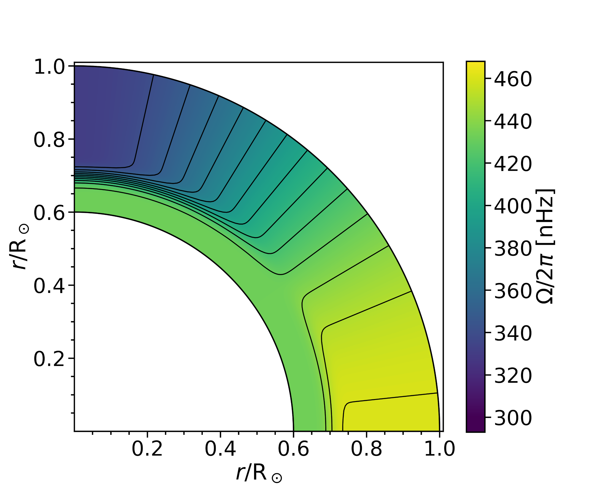
As explained in Section 1.2, our first step is to obtain \(\Delta T (r, \theta)\) for \(r<r_c\) by making use of [ch5:eq3], in which the left hand side is evaluated by using \(\Omega (r, \theta)\) as given by [ch5:eq6]. To calculate the left side of [ch5:eq3], we need to evaluate the derivative of \(\Omega^2\) along the \(z\) direction. For this purpose, we use the transformation equation \[\begin{equation} \left(\frac{\partial}{\partial z}\right)_s=\left(\frac{\partial r}{\partial z}\right)_s\frac{\partial}{\partial r}-\left(\frac{\partial \theta}{\partial z}\right)_s\frac{\partial}{\partial \theta}=\cos{\theta}\frac{\partial}{\partial r}-\frac{\sin{\theta}}{r}\frac{\partial}{\partial \theta}, \label{ch5:eq7} \end{equation}\] on making use of \(s=r\cos{\theta}\) and \(z=r\sin{\theta}\) (shown in 1.4). We need to choose a particular value of \(r_c\). We are going to present discussions for values of \(r_c\) in the range 0.92 – 0.97 . We now use [ch5:eq34] to calculate \(\Delta T (r,\theta)\) in the convection zone for all values of \(r\) below the maximum value 0.98 of \(r_c\) that we consider. We calculate the numerical derivative of \(\Omega^2\) with the help of the transformation [ch5:eq7] by using the first order divided difference scheme. Then we use the Runge-Kutta 4th order (RK4) method to solve [ch5:eq3], which is equivalent to carrying on the integration in [ch5:eq34].
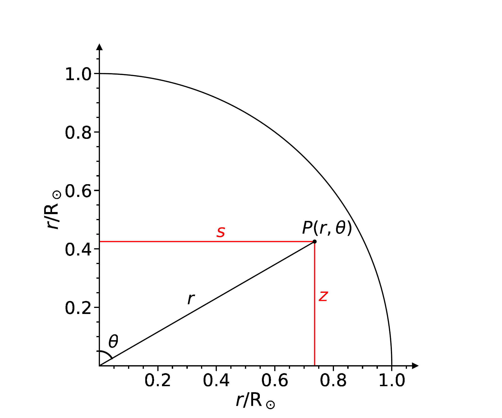
1.5 shows the distribution of \(\Delta T (r, \theta)\) in the convection zone below 0.98 that would follow on assuming the thermal wind balance and using \(\Omega (r, \theta)\) given by the analytical expression [ch5:eq6]. We clearly see a decrease in \(\Delta T(r,\theta)\) with \(r\) as we approach the surface. Now, one quantity which is of particular interest to us is the pole-equator temperature difference \(\Delta T(r, \theta=0) - \Delta T(r, \theta=\pi/2)\) as a function of \(r\). Figure 1.6 shows this pole-equator temperature difference as a function of \(r\) within the convection zone for \(r<0.98\).
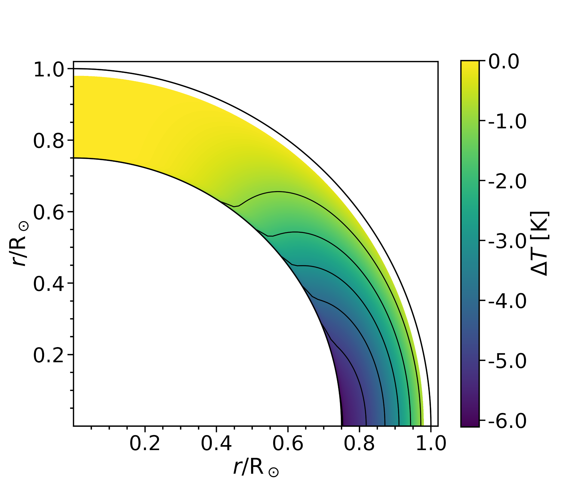
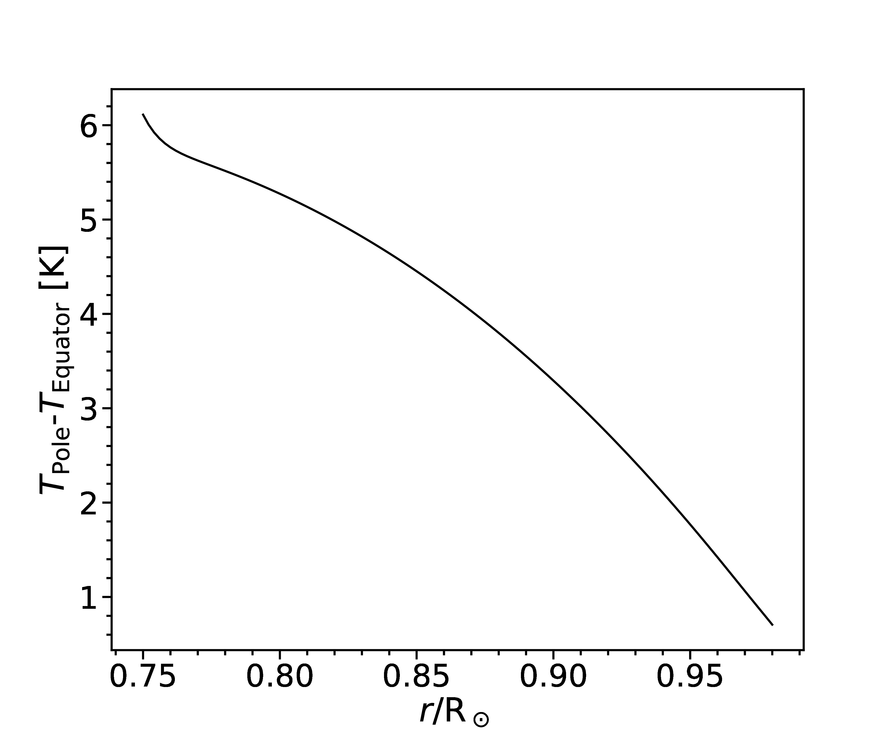
We shall now present our results for the NSSL by assuming different values of \(r_c\) in the range 0.92 – 0.97. For a particular value of \(r_c\), we take \(\Delta T (r,\theta)\) to be as given in 1.5 for \(r <r_c\) and as given by [ch5:eq5] for \(r >r_c\). In this way, we obtain \(\Delta T (r,\theta)\) throughout the convection zone for a chosen value of \(r_c\). We point out that the observational value of the pole-equator temperature difference reported by Rast, Ortiz, and Meisner (2008) is \(\approx 2.5\) K. 1.6 shows that such a value of the pole-equator temperature difference occurs at around \(r \approx 0.92\) when we evaluate \(\Delta T (r, \theta)\) from the analytical expression ([ch5:eq6]) of \(\Omega(r, \theta)\). This means that we have to take \(r_c \approx 0.92\) to get the pole-equator temperature difference at the surface which matches the observations of Rast, Ortiz, and Meisner (2008).
Now that we have \(\Delta T (r,\theta)\) throughout the convection zone including the top layer (\(r\ge r_c\)) for different values of \(r_c\), the last step is to calculate \(\Omega (r\ge r_c,\theta)\) in this top layer by assuming that the thermal wind balance holds in this layer. We have already made use of \(\Omega (r < r_c,\theta)\) in the deeper layers of the convection zone, as given by [ch5:eq6], to calculate \(\Delta T (r,\theta)\) by making use of [ch5:eq34] (which is effectively the same as [ch5:eq3]) and [ch5:eq5]. We now use the thermal balance [ch5:eq3] in the top layer (\(r\ge r_c\)) in a different manner. From the value of \(\Delta T (r\ge r_c,\theta)\) in this top layer, we calculate the right hand side of [ch5:eq3] and then solve [ch5:eq3] to find the distribution of \(\Omega (r\ge r_c,\theta)\) in this top layer which would satisfy [ch5:eq3]. We carry on this procedure for the values \(r_c =\) 0.92 , 0.93 , 0.94 , 0.95 , 0.96 , 0.97 . We can combine \(\Omega (r\ge r_c,\theta)\) obtained in the top layer in this manner with \(\Omega (r < r_c,\theta)\) in the deeper layers as given by [ch5:eq6]. This combination for the different values of \(r_c\) which we have used are shown in 1.7. The dotted circles in the various sub-figures indicate the values of \(r_c\) for all these cases.
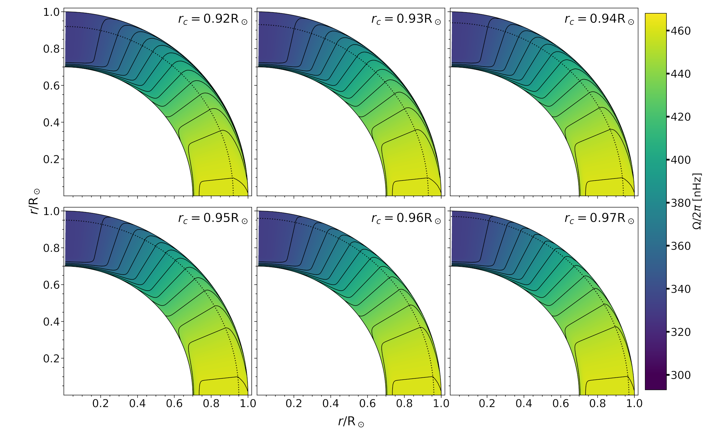
The contours of constant \(\Omega\) bend towards the equator in the top layers of the convection zone for all values of \(r_c\) shown in 1.7. This indicates the clear presence of the NSSL in all these cases. We stress again that the initial input data \(\Omega (r < r_c,\theta)\) which we had used in the deeper layers of the convection zone in order to start our calculations did not have the NSSL. In fact, the analytical expression ([ch5:eq6]), which we had used for the values of \(\Omega (r < r_c,\theta)\) in the deeper layers, does not give rise to the NSSL at all, as seen in 1.3. It is thus clear that the NSSL that we see in 1.7 could not be an artifact of the input data. The NSSL arises from the fact that the thermal wind term becomes very large in the top layers due to the falling temperature there and the centrifugal term also has to become very large to balance it. This requirement for satisfying the thermal wind condition ([ch5:eq3]) in the top layer can only be met if there is an NSSL. We propose this as the explanation for the existence of the NSSL in the top layer of the solar convection zone. The different sub-plots in 1.7 show that the increase in \(r_c\) causes the NSSL to be confined to an increasingly narrower layer near the solar surface.
5.4 Results Based on Helioseismology Data
After presenting the results based on the analytical expression Equation [ch5:eq6] of \(\Omega (r, \theta)\) in the previous section (Section 1.3), we now carry on exactly the same calculations based on the value of \(\Omega (r, \theta)\) as given by helioseismology. We use \(\Omega (r, \theta)\) averaged over cycle 23, as supplied to us by H.M. Antia. The methodology that was used for obtaining the \(\Omega (r, \theta)\) profile from helioseismology data has been described by Antia, Basu, and Chitre (1998; Antia, Basu, and Chitre 2008). Our calculations are based on the tabulated value of temporally averaged \(\Omega (r, \theta)\) for all \(r\) in the range 0.7 to at steps of 0.005 and for all \(\theta\) in the range of \(2^{\circ}\) to \(90^{\circ}\) (\(88^{\circ}\) to \(0^{\circ}\) latitude) at steps of \(2^{\circ}\). The profile of \(\Omega (r, \theta)\) with the contours of constant \(\Omega\) (represented as black solid lines) has been shown in 1.1.
As in Section 1.3, we carry on calculations for different values of \(r_c\) in the range 0.93 – 0.98 . For a particular value of \(r_c\), we substitute the values of \(\Omega (r < r_c,\theta)\) in the left hand side of [ch5:eq3] to calculate \(\Delta T (r < r_c,\theta)\). The values of \(\Delta T (r,\theta)\) for \(r > r_c\) are again given by [ch5:eq5]. 1.8a shows the profile of \(\Delta T(r<r_c,\theta)\) calculated for the case \(r_c = 0.98\) . One concern we have is that the helioseismic determination of \(\Omega (r, \theta)\) has large uncertainties in the polar regions at high latitudes and, when we use [ch5:eq34] to calculate \(\Delta T (r < r_c,\theta)\), which is \(\Delta T_{\theta_0} (r < r_c,\theta)\) with \(\theta_0 = 0\), we have to integrate over this region where the value of \(\Omega (r, \theta)\) is unreliable. One way of avoiding this difficulty is to consider temperature variations only in regions not too close to the poles where we can trust the helioseismic values of \(\Omega(r, \theta)\). We have used [ch5:eq34] to calculate \(\Delta T_{20^{\circ}} (r < r_c,\theta)\) by avoiding the polar region. 1.8b shows the profile of \(\Delta T_{20^{\circ}} (r < r_c,\theta)\). Comparing the profiles of \(\Delta T (r < r_c,\theta)\) for co-latitudes higher than \(20^{\circ}\) (i.e. latitudes lower than \(70^{\circ}\)) in 1.8a – b, we find that various features are in broad agreement, indicating that they are not due to errors in \(\Omega (r, \theta)\) near the polar region. Especially, we find an annular strip near \(r = 0.925 R_{\odot}\) within which the value of \(\Delta T (r < r_c,\theta)\) is close to zero in 1.8a. This strip becomes less prominent in 1.8b, though it does not disappear. The reason behind this strip is this. On taking a careful look at 1.1, we realize that \(\pa \Omega^2/\pa z\) just below the NSSL is close to zero at latitudes higher than mid-latitudes and is even positive at very high latitudes (it is usually negative within the convection zone). This explains, on the basis of [ch5:eq34], why we have this unusual strip even in 1.8b after excluding the polar region. Schou et al. (1998) refer to this region at high latitudes somewhat below the surface as “a submerged polar jet” and comment in Section 5.5 of their paper that it “is seen consistently by several independent methods”. If this submerged polar jet is real and not a data artifact, then what causes it is certainly an important question. We do not attempt to address this question in the present paper.
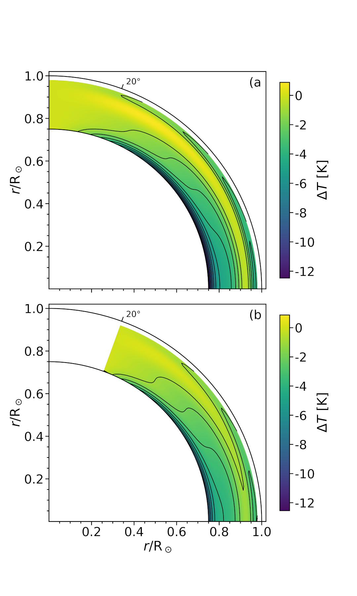
We now plot the temperature difference \(\Delta T (r, \theta=20^{\circ}) - \Delta T (r, \theta=90^{\circ})\) between the co-latitude \(20^{\circ}\) (i.e. latitude \(70^{\circ}\)) and the equator as a function of \(r\) in 1.9. It should be clear from [ch5:eq34] that this temperature difference is given by integrating the integrand in the right hand side of [ch5:eq34] from \(\theta=20^{\circ}\) to \(\theta=90^{\circ}\). In other words, this temperature difference is independent of the values of \(\Omega (r, \theta)\) at very high latitudes (where these values may have large uncertainties) and should be the same for both the cases shown in 1.8a and 1.8b. We have seen in the calculations based on the analytical expression of \(\Omega (r, \theta)\) in the previous section (Section 1.3) that the pole-equator temperature difference decreased monotonically with \(r\) (see 1.6). However, 1.9 shows a more complicated dependence of a similar temperature difference on \(r\). We indeed find a monotonic decrease of the temperature difference with \(r\) for values of \(r\) lower than \(\approx0.92\). But then it starts increasing with \(r\) up to \(\approx 0.97\), beyond which it decreases again. This complicated variation of the temperature difference is connected with the submerged polar jet which continues even a little bit beyond co-latitude \(20^{\circ}.\)
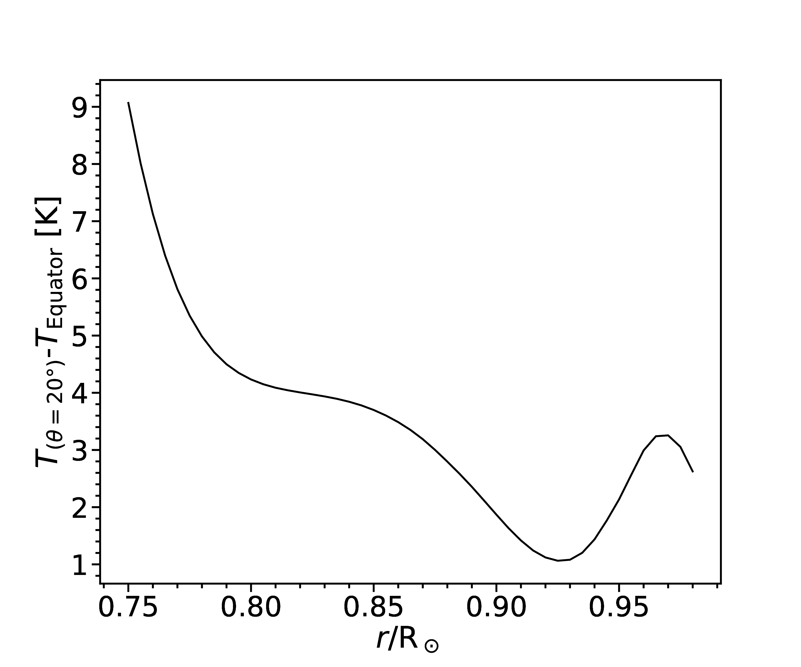
The final step in our analysis is exactly the same as in Section 1.3. Once we have \(\Delta T (r, \theta)\) throughout the convection zone corresponding to different values of \(r_c\) (with its value for \(r \ge r_c\) being given by [ch5:eq5]), we evaluate the right hand side of [ch5:eq3] for \(r\ge r_c\) and then solve [ch5:eq3] to obtain \(\Omega (r\ge r_c, \theta)\) in the top layers of the convection zone. Since we have to differentiate \(\Delta T (r > r_c,\theta)\) with respect to \(\theta\), it does not matter whether we use \(\Delta T_{\theta_0} (r > r_c,\theta)\) with \(\theta_0 = 0\) or with \(\theta_0 = 20^{\circ}\). The temperature profiles in both 1.8a and 1.8b give the same distribution of \(\Omega (r\ge r_c, \theta)\) in the top layers of the convection zone for \(\theta\) higher than \(20^{\circ}\). Thus, the profile of \(\Omega (r\ge r_c, \theta)\) in the top layers of the convection zone that we have calculated starting initially from \(\Omega (r\le r_c, \theta)\) in the deeper layers of the convection is independent of the errors in \(\Omega (r\le r_c, \theta)\) in the polar region. In 1.10, we have shown the distribution of \(\Omega (r\ge r_c, \theta)\) obtained in this way for different values of \(r_c\) (represented by black dashed circles), along with \(\Omega (r<r_c,\theta)\) as given by helioseismology data (same as in 1.1). In all these cases, we clearly see the NSSL. While the input data \(\Omega (r < r_c, \theta)\) used in our calculations show some indications of the NSSL for the cases \(r_c =\)0.97 , 0.98 , there was no sign of the NSSL in the input data for the cases \(r_c =\)0.93 , 0.94 . The fact that we get a layer just below the solar surface resembling the NSSL in all these cases strongly suggests that the NSSL arises from the requirement of the thermal wind balance with the thermal wind term becoming very large in the top layer of the convection zone. To facilitate comparison of our theoretical results with the observations, we have over-plotted in 1.10 the contours of constant \(\Omega\) obtained from helioseismology observation (shown by dashed red lines).
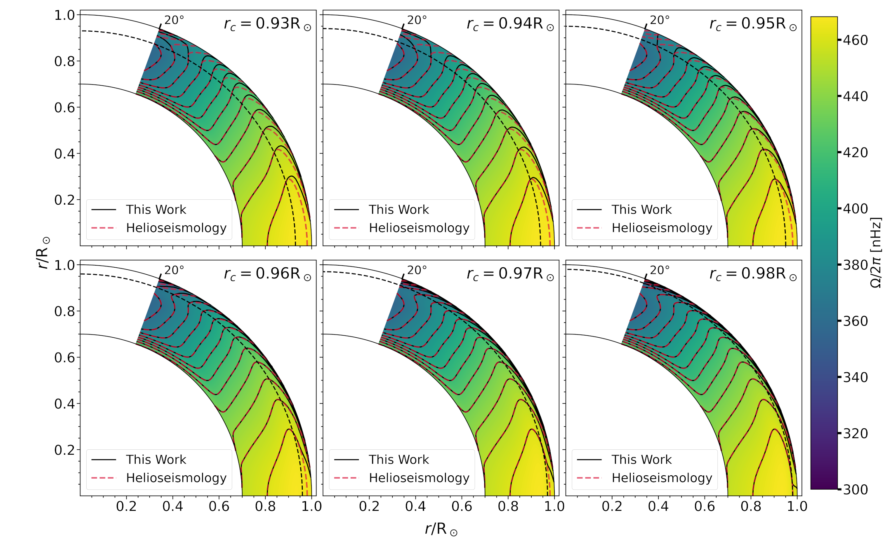
We at last come to the question whether the theoretical results obtained on the basis of our assumption that the thermal balance equation holds in the top layers of the convection zone agree with observational data. Comparing the solid lines indicating the theoretical results with the dashed red lines indicating helioseismology data above \(r = r_c\) in 1.10, it is evident that the agreement is very good for all values of \(r\) larger than 0.96 . In the cases \(r =\)0.97 , 0.98 , the lower part of the NSSL was present in the input data and one may argue that it is not so surprising that our theoretical calculations correctly gave the structure of the NSSL in the upper layers. However, this is clearly not case for \(r = 0.96\) . One other aspect of the observational data we need to match is the pole-equator temperature difference. Looking at Figure 4 of Rast, Ortiz, and Meisner (2008), we find that they present measurements up to latitudes of about \(70^{\circ}\). What they loosely refer to as the pole-equator temperature difference (PETD) is actually the temperature difference between \(70^{\circ}\) and the equator. If we also use the same convention, then what is plotted in 1.9 can be called PETD and compared directly with the results of Rast, Ortiz, and Meisner (2008). Taking the value 2.5 K reported by Rast, Ortiz, and Meisner (2008) to be the correct value, we note in 1.9 that the PETD has the value 2.5 K at \(r \approx 0.96\) . If this is taken to be the value of \(r_c\), then PETD at the solar surface should also be 2.5 K. It is thus clear that an accurate determination of the PETD at the solar surface is extremely important and can put constraints on the appropriate value of \(r_c\) to be used in theoretical calculations. If this temperature difference is indeed 2.5 K, then we conclude that the theoretical calculations carried out with \(r_c=0.96\) in our model are in good agreement with observational data. This case gives a good structure of the NSSL as we see in 1.10 and the PETD at the solar surface also has the desired value 2.5 K.
To check quantitatively how well our theoretically determined \(\Omega\) in the NSSL compares with observational \(\Omega_{\rm heliseismology}\), we consider the percentile error \[\begin{equation} f = 100 \frac{\Omega - \Omega_{\rm helioseismology}} {\Omega_{\rm helioseismology}} \label{ch5:eq11} \end{equation}\] at different points. Since the observed variation of \(\Omega\) within the NSSL is at the level of 5%, we must have \(f\) considerably less than that for the fit to be considered sufficiently good. 1.11 shows the distribution of \(f\) for the case \(r_c = 0.96\) in the top layer of the convection zone above \(r = 0.96\) . We indeed find that \(f\) is much less than 5% within the NSSL, except in a very thin layer above \(0.995\) close to the solar surface. This perhaps suggests that the thermal wind balance breaks down in this very thin layer near the surface. The smallness of \(f\) within the NSSL below this very thin layer presumably indicates that the thermal wind balance holds there to a very good approximation. The root mean square (RMS) value of \(f\) for the case presented in 1.9 is found to be 1.36%. The RMS values of \(f\) for cases \(r_c = 0.95\) and \(r_c = 0.97\) turn out to be 1.50% and 2.41% respectively.
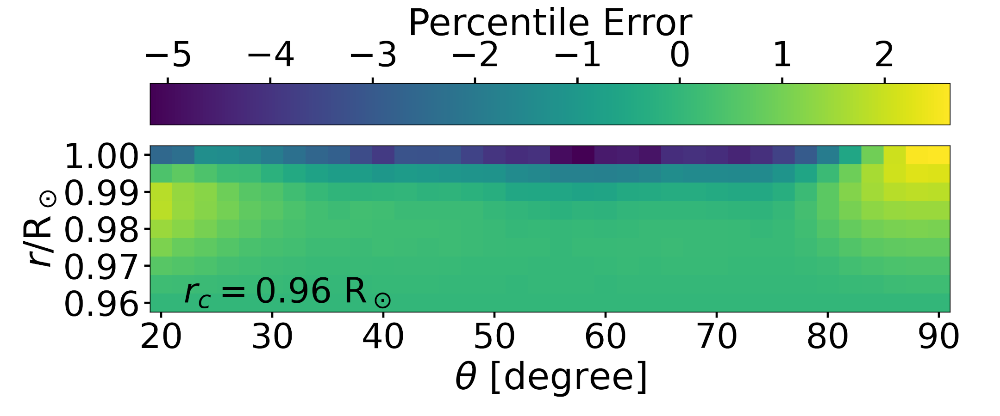
We are not aware of any independent measurements of the pole-equator temperature difference after the work of Rast, Ortiz, and Meisner (2008) done more than a decade ago. If the variation of the temperature with latitude on the solar surface is be measured more accurately by modern techniques in the future, then it will be useful to compare such observations with the theoretical results of our model. 1.12 shows how \(\Delta T_{20^{\circ}} (R_\odot, \theta)\) varies with the co-latitude \(\theta\) for different values of \(r_c\). Note that \(\Delta T_{20^{\circ}} (r, \theta)\) is defined in Equation [ch5:eq34] in such a manner that its value is always zero at \(\theta = 20^{\circ}\). Also, note that the curves for cases \(r_c = 0.96\) , 0.97 , 0.98 do not appear in the same simple sequence as the curves for cases \(r_c = 0.93\) , 0.94 , 0.95 . Given the complicated plot shown in 1.9, this behaviour is not surprising. It will be instructive to compare 1.12 with observational data when such data become available. We remind the readers that all the results in this Section were obtained on the assumption of a sudden jump in the nature of convective heat transport at \(r = r_c\). If the transition is more gradual, that may change the results slightly. Detailed comparison between theoretical results and observational data in future may throw more light on this.
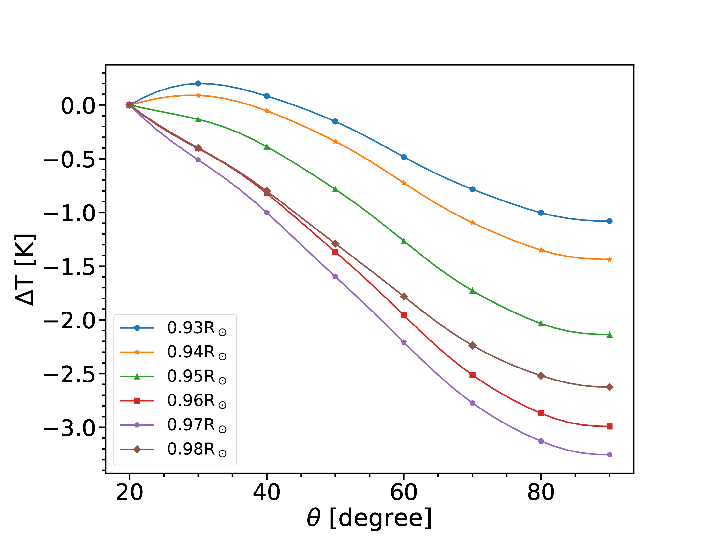
Assuming that the intensity of radiation \(I\) emitted from a region of the surface goes as \(T^4\) according to the Stefan-Boltzmann law, the variation of intensity with latitude caused by the variation of temperature with latitude would be given by \[\begin{equation} \frac{\Delta I}{I} \approx 4 \frac{\Delta T}{T}. \end{equation}\] The pole-equator intensity difference corresponding to a temperature difference of 2.5 K would be \[\begin{equation} \frac{\Delta I}{I} \approx 0.0016. \end{equation}\] In other words, the pole would be only about 0.16% brighter than the equator. The latitudinal variation of intensity measured by Rast, Ortiz, and Meisner (2008) is given in Figure 4 of their paper. They point out that it is non-trivial to measure this small latitudinal variation of intensity. Apart from instrumental errors, the presence of polar faculae makes these measurements difficult. However, Rast, Ortiz, and Meisner (2008) claimed that their measurement of enhanced intensity near the polar region is a real physical effect.
5.5 Conclusion
There are differences of opinion why the Sun has a Near-Surface Shear Layer (NSSL). A novel explanation of the NSSL was recently proposed by Arnab Rai Choudhuri (2021a) on the basis of order-of-magnitude estimates. We now substantiate the proposal of Arnab Rai Choudhuri (2021a) through detailed calculations. Although it is generally agreed that the thermal wind balance equation holds within the body of the solar convection zone, whether this equation even holds in the top layers had been debated. It has been suggested that this equation breaks down in a boundary layer at the top and this may somehow give rise to the NSSL. Arnab Rai Choudhuri (2021a) argued on the other hand that the thermal wind term becomes very large in the top layers of the convection zone and the thermal wind balance equation has to hold. This means that the centrifugal term also has to be very large in the top layers to achieve the thermal wind balance, necessitating the existence of the NSSL. When we compare the final results of our theoretical model with observational data from helioseismology, we conclude that the thermal wind balance condition may break down only in a very thin layer near the solar surface (having thickness of order \(\approx 0.005\) or \(\approx 3000\) km).
The argument proposed in this paper hinges crucially on the fact that the convective cells are affected by the solar rotation within the main body of the convection zone, except in the top layers within which the convective turnover time is less than the rotation period of the Sun. Although the transition from the layers where rotational effects are large to the layers where they are small must be a gradual transition, we simplify the calculations by assuming that this transition takes place at \(r = r_c\). Since the effect of the solar rotation would make the convective heat transport in the deeper layers dependent on latitude, we expect that the temperature at a point within the convection zone will depart by an amount \(\Delta T (r, \theta)\) from what we get from the standard models of the convection zone in which the effect of rotation is not taken into account. In principle, it should be possible to calculate \(\Delta T (r, \theta)\) from the theory of convective heat transport. However, this is a formidably difficult problem in practice and we calculate \(\Delta T (r, \theta)\) in the deeper layers of the convection zone from the differential rotation measured by helioseismology by assuming that the thermal wind balance condition prevails in the deep layers of the convection zone. Since the effect of rotation on the convection is negligible above \(r = r_c\), we expect the radial temperature gradient \(dT/dr\) to be independent of latitude in this layer, which implies that \(\Delta T (r, \theta)\) does not vary with \(r\) in this layer. It is this fact, coupled with the fact that the temperature drops sharply in this top layer, which makes the thermal wind term very large in this top layer. From the requirement that the centrifugal term also has to become large to balance the large thermal wind term in this layer, we can calculate the distribution of \(\Omega (r, \theta)\) in this near-surface layer. We have found that our calculations give a layer resembling the NSSL.
The non-variation of \(\Delta T (r, \theta)\) with \(r\) in the upper layers of the convection zone ensures that the pole-equator temperature difference does not vary in this layer. The means that the value of the pole-equator temperature difference at \(r_c\) gets mapped to the solar surface. A careful measurement of the pole-equator temperature difference at the solar surface would enable us to assess the value of \(r_c\) above which the convective motions are not affected much by rotation. The value 2.5 K of the pole-equator temperature difference reported by Rast, Ortiz, and Meisner (2008) led us to conclude that \(r_c \approx 0.96\). For this value of \(r_c\), the various aspects of observational data, including the structure of the NSSL, are explained very well by our theoretical model. Fairly sophisticated simulations of solar convection are now being carried on by many groups. We hope that such simulations may also eventually be able to give an indication of the value of \(r_c\) above which the effect of rotation is negligible. Since the measurement of the pole-equator temperature difference allows us to assess \(r_c\), such a measurement can put important constraints on the simulations of solar convection. It appears that there have not been any independent measurements of the pole-equator temperature difference after the work of Rast, Ortiz, and Meisner (2008) done more than a decade ago. We hope that other groups will undertake this measurement in the near future, since the value of this temperature difference has connections with such important issues as the nature of the solar convection and the structure of the NSSL.
The large-scale flows in the solar convection zone like the differential rotation and the meridional circulation play important roles in the flux transport dynamo model for explaining the solar cycle, which started being developed from the 1990s (Wang, Sheeley, and Nash 1991; A. R. Choudhuri, Schüssler, and Dikpati 1995; Durney 1995) and has been reviewed by several authors in the last few years (Charbonneau 2010; Arnab Rai Choudhuri 2011; Karak et al. 2014). One crucial question is whether the NSSL is important in the solar dynamo process. One key idea in the solar dynamo models is that the toroidal magnetic field is generated by the strong differential rotation at the bottom of the solar convection zone, where the field can be stored in the stable sub-adiabatic layers below the bottom of the convection zone and can undergo amplification there. Srtands of the toroidal magnetic field eventually break out of the stable layers to rise through the convection zone due to magnetic buoyancy. Since the near-surface layer is a region of strong super-adiabatic temperature gradient which enhances magnetic buoyancy (Moreno-Insertis 1983; Arnab Rai Choudhuri and Gilman 1987), magnetic fields are expected to rise through this layer quickly without allowing much time for shear amplification. Unless there is some mechanism to keep magnetic fields stored in the NSSL for some time, most likely the NSSL is not important for the dynamo process, although there is not complete unanimity on this (Brandenburg 2005). Models of the flux transport dynamo without including the NSSL give reasonable fits with observations (Chatterjee, Nandy, and Choudhuri 2004). Dynamo-generated magnetic fields, however, can react back on the large-scale flows producing temporal variations with the solar cycle (Chakraborty, Choudhuri, and Chatterjee 2009; G. Hazra, Choudhuri, and Miesch 2017). For example, the meridional circulation varies periodically with the solar cycle and modelling it requires going beyond the thermal wind balance [ch5:eq3] to include a time derivative term (G. Hazra, Choudhuri, and Miesch 2017; Arnab Rai Choudhuri 2021b). The thermal wind balance equation follows from the full equation for the meridional circulation under steady state conditions if the dissipation term can be ignored. Presumably, the thermal wind balance [ch5:eq3] holds for the time-averaged part of large-scale flows, which has been our focus in this paper. However, there is evidence of random temporal fluctuations in the meridional circulation (Karak 2010; Karak and Choudhuri 2011; A. R. Choudhuri and Karak 2012; Arnab Rai Choudhuri 2014; G. Hazra et al. 2019), possibly indicating slight violations of the thermal wind balance equation. Since the terms involved in the thermal wind balance are much larger than the other terms in the equation of the meridional circulation (see, for example, the discussion in the Appendix of Arnab Rai Choudhuri (2021b)), even a slight imbalance between these large terms is sufficient to cause fluctuation in the meridional circulations and we believe that the violations of the thermal wind balance remain very small.
Lastly, we suggest that other solar-like stars with rotation periods similar to the Sun are likely to have similar shear layers near their surfaces, since the solar NSSL arises out of very general considerations which should hold for such stars. The study of starspots and stellar cycles in the last few years have suggested that the solar-like stars also must have large-scale flows like the differential rotation and the meridional circulation giving rise to dynamo cycles, as in the case of the Sun (Karak, Kitchatinov, and Choudhuri 2014; Arnab Rai Choudhuri 2017; Gopal Hazra et al. 2019). Although asteroseismology has started giving some initial results of differential rotation in solar-like stars (Benomar et al. 2018), we are still very far for determining observationally whether other stars also have NSSL.